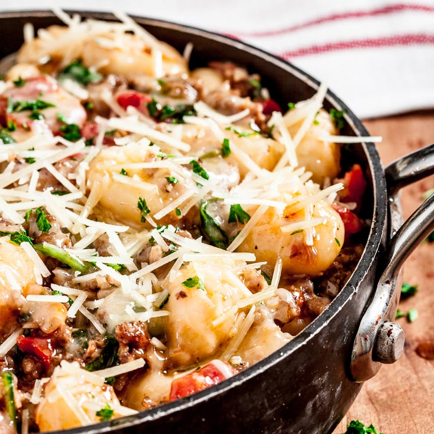

One-Pan Gnocchi with Sausage and Spinach

Description
This 20-minute Gnocchi with Sausage and Spinach is packed with big flavors the entire family will adore. Fluffy soft gnocchi, savory sausage, and fresh vegetables are
combined into a tasty meal you'll feel great about serving.
Ingredients
- 2 TB olive oil
- 1 onion, chopped
- 4 garlic cloves, minced
- 1 lb Italian sausage (bulk, no casings)
- 1 16 oz package potato gnocchi
- 1 14.5 oz can Italian flavored diced tomatoes with juices (do not drain)
- 1/4 cup low sodium chicken broth
- 4 cups fresh baby spinach leaves
- 1/4 tsp freshly ground black pepper
- 1/2 cup shredded mozzarella cheese
- 1/2 cup freshly shredded Parmesan cheese
Steps
- In a large nonstick skillet, add oil and heat over medium high until hot. Add onion and garlic and stir until fragrant, 30 seconds.
- Add sausage; stir and break it up into pieces, until nicely browned. Don't drain.
- Add uncooked gnocchi. Stir 1 min, gently breaking up any clumps.
- Stir in tomatoes with juices and chicken broth. Cover and cook on medium heat, 5 min, or just until gnocchi is fluffy and cooked through. Turn off heat.
- Add spinach and pepper. Stir until spinach leaves are wilted.
- Sprinkle with cheeses and cover for 3-5 minutes or until cheese is melted. Serve immediately.